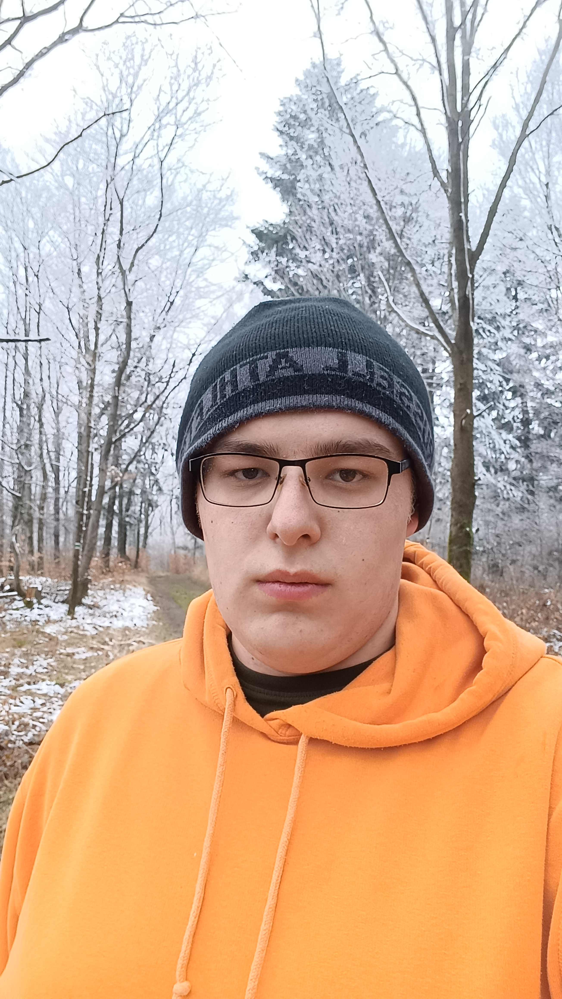
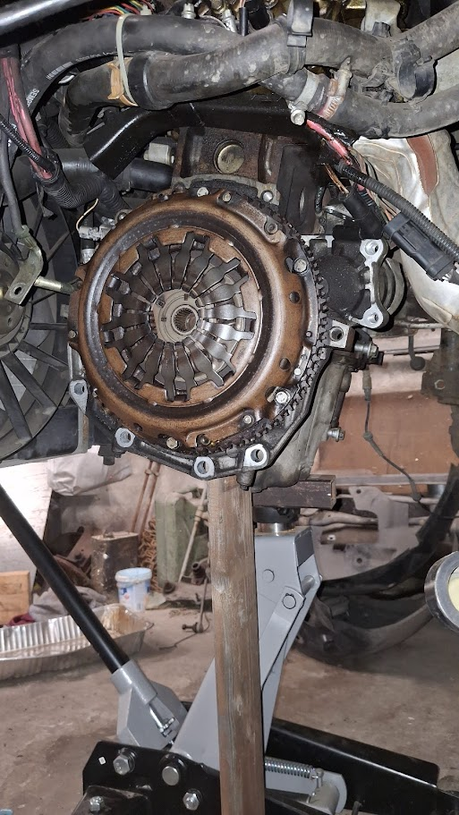
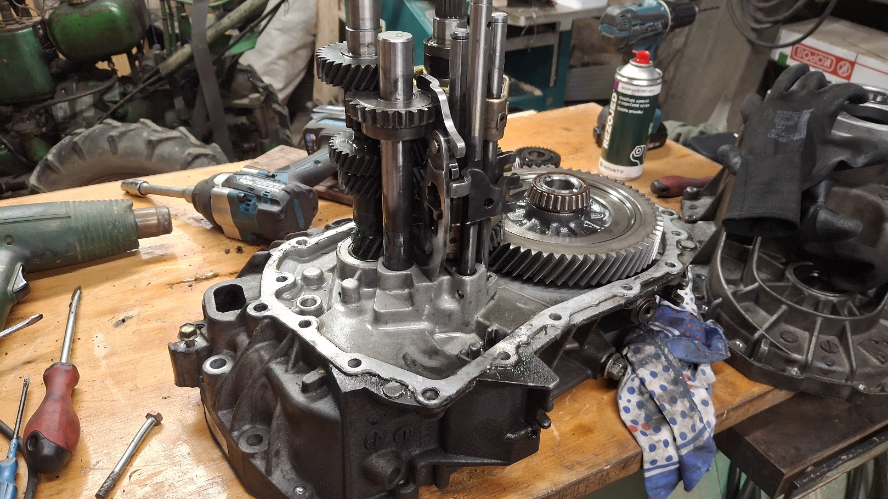

O mně
Jsem Vojtěch Lisztwan, je mi 20 let, mám dostudovanou střední školu SPŠE Havířov, konrétně informatika. Ve volném čase se věnuji programování, převážně čipů/mikrokontrolérů v jazyce C. Další volnočasovou aktivitou je programovaní aplikací v pythonu.
Další oblastí které se věnuji jsou motorové vozidla, ať už jsou motorky, auta nebo třeba traktory. Technika mě baví a obzvlášt motory. Máme doma tři auta, které servisuju sám a pár starších motorek značky Jawa. K mým největším úspěchům z této oblasti patří výměna spojky a repase převodovky na autě Renault Scenic 2.
Moje pracovní zkušenosti
- Léto 2024
- Brigáda na skladě v Gastroslužbách v Třineckých Železárnách
- 1.6.2025 - současnost
- Pickering connect
- Oddělení R&D(Research and Development) na pozici vývojář
- Práce na vývoji testeru desek plošných spojů a další menší projekty
Fotky z projektů a života




Moje dovednosti
- C, C++
- Python
- Git
- Java
- C#
- SQL, PHP
- Lua skripty
- Cisco, sítě
- STM32F4, Aurduino, ESP